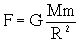
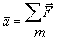
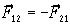
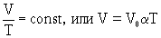
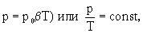
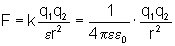
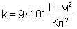
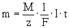
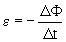

[ Механика | Термодинамика | Электричество | Оптика | Атомная физика ]
ЭНЕРГИИ СОХРАНЕНИЯ И ПРЕВРАЩЕНИЯ ЗАКОН - общий закон природы: энергия любой замкнутой системы при всех процессах, происходящих в системе, остается постоянной (сохраняется). Энергия может только превращаться из одной формы в другую и перераспределяться между частями системы. Для незамкнутой системы увеличение (уменьшение) ее энергии равно убыли (возрастанию) энергии взаимодействующих с ней тел и физических полей.
1. МЕХАНИКА
АРХИМЕДА ЗАКОН - закон гидро- и аэростатики: на тело, погруженное в жидкость или газ, действует выталкивающая сила, направленная вертикально вверх, числено равная весу жидкости или газа, вытесненного телом, и приложенная в центре тяжести погруженной части тела. FA= gV, где r - плотность жидкости или газа, V - объем погруженной части тела. Иначе можно сформулировать так: тело, погруженное в жидкость или газ, теряет в своем весе столько, сколько весит вытесненная им жидкость (или газ). Тогда P= mg - FA Открыт др. гр. ученым Архимедом в 212г. до н.э. Является основой теории плавания тел.
ВСЕМИРНОГО ТЯГОТЕНИЯ ЗАКОН - закон тяготения Ньютона: все тела притягиваются друг к другу с силой прямо пропорциональной произведению масс этих тел и обратно пропорциональной квадрату расстояния между ними: , где M и m - массы взаимодействующих тел, R - расстояние между этими телами, G - гравитационная постоянная (в СИ G=6,67.10-11 Н.м2/кг2.
ГАЛИЛЕЯ ПРИНЦИП ОТНОСИТЕЛЬНОСТИ, механический принцип относительности - принцип классической механики: в любых инерциальных системах отсчета все механические явления протекают одинаково при одних и тех же условиях. Ср. относительности принцип.
ГУКА ЗАКОН - закон, согласно которому упругие деформации прямо пропорциональны вызывающим их внешним воздействиям.
ИМПУЛЬСА СОХРАНЕНИЯ ЗАКОН - закон механики: импульс любой замкнутой системы при всех процессах, происходящих в системе, остается постоянным (сохраняется) и может только перераспределяться между частями системы в результате их взаимодействия.
НЬЮТОНА ЗАКОНЫ - три закона, лежащие в основе ньютоновской классической механики. 1-й закон (закон инерции): материальная точка находится в состоянии прямолинейного и равномерного движения или покоя, если на нее не действуют другие тела или действие этих тел скомпенсировано. 2-й закон (основной закон динамики): ускорение, полученное телом, прямо пропорционально равнодействующей всех сил, действующих на тело, и обратно пропорционально массе тела (). 3-й закон: две материальные точки взаимодействуют друг с другом силами одной природы равными по величине и противоположными по направлению вдоль прямой, соединяющей эти точки ().
ОТНОСИТЕЛЬНОСТИ ПРИНЦИП - один из постулатов относительности теории, утверждающий, что в любых инерциальных системах отсчета все физические (механические, электромагнитные и др.) явления при одних и тех же условиях протекают одинаково. Является обобщением Галилея принципа относительности на все физические явления (кроме тяготения).
2. МОЛЕКУЛЯРНАЯ ФИЗИКА И ТЕРМОДИНАМИКА
АВОГАДРО ЗАКОН - один из основных законов идеальных газов: в равных объемах различных газов при одинаковой температуре и давлении содержится одинаковое число молекул. Открыт в 1811 году итал. физиком А.Авогадро(1776-1856).
БОЙЛЯ-МАРИОТТА ЗАКОН - один из законов идеального газа: для данной массы данного газа при постоянной температуре произведение давления на объем есть величина постоянная. Формула: pV=const. Описывает изотермический процесс.
ВТОРОЙ ЗАКОН ТЕРМОДИНАМИКИ - один из основных законов термодинамики, согласно которому невозможен периодический процесс единственным результатом которого является совершение работы, эквивалентной количеству теплоты, полученному от нагревателя. Другая формулировка: невозможен процесс, единственным результатом которого является передача энергии в форме теплоты от менее нагретого тела к более нагретому. В.з.т. выражает стремление системы, состоящей из большого количества хаотически движущихся частиц, к самопроизвольному переходу из состояний менее вероятных в состояния более вероятные. Запрещает создание вечного двигателя второго рода.
ГЕЙ-ЛЮССАКА ЗАКОН - газовый закон: для данной массы данного газа при постоянном давлении отношение объема к абсолютной температуре есть величина постоянная ,где =1/273 К-1 - температурный коэффициент объемного расширения.
ДАЛЬТОНА ЗАКОН - один из основных газовых законов: давление смеси химически не взаимодействующих идеальных газов равно сумме парциальных давлений этих газов.
ПАСКАЛЯ ЗАКОН - основной закон гидростатики: давление, производимое внешними силами на поверхность жидкости или газа, передается одинаково по всем направлениям.
ПЕРВЫЙ ЗАКОН ТЕРМОДИНАМИКИ - один из основных законов термодинамики, являющийся законом сохранения энергии для термодинамической системы: количество теплоты Q, сообщенное системе, расходуется на изменение внутренней энергии системы U и совершение системой работы A против внешних сил. Формула: Q= U+A. Лежит в основе работы тепловых машин.
ШАРЛЯ ЗАКОН - один из основных газовых законов: давление данной массы идеального газа при постоянном объеме прямо пропорционально температуре:  где p0 - давление при 00С, =1/273,15 К-1 - температурный коэффициент давления.
3. ЭЛЕКТРИЧЕСТВО И МАГНЕТИЗМ
АМПЕРА ЗАКОН - закон взаимодействия двух проводников с токами; параллельные проводники с токами одного направления притягиваются, а с токами противоположного направления - отталкиваются. А.з. называют также закон, определяющий силу, действующую в магнитном поле на малый отрезок проводника с током. Открыт в 1820г. А.-М. Ампером.
ДЖОУЛЯ-ЛЕНЦА ЗАКОН - закон, описывающий тепловое действие электрического тока. Согласно Д. - Л.з. количество теплоты, выделяющееся в проводнике при прохождении по нему постоянного тока, прямо пропорционально квадрату силы тока, сопротивлению проводника и времени прохождения.
ЗАРЯДА СОХРАНЕНИЯ ЗАКОН - один из фундаментальных законов природы: алгебраическая сумма электрических зарядов любой электрически изолированной системы остается неизменной. В электрически изолированной системе З.с.з. допускает появление новых заряженных частиц (напр., при электролитической диссоциации, ионизации газов, рождении пар частица - античастица и др.), но суммарный электрический заряд появившихся частиц всегда должен быть равен нулю.
КУЛОНА ЗАКОН - основной закон электростатики, выражающий зависимость силы взаимодействия двух неподвижных точечных зарядов от расстояния между ними: два неподвижных точечных заряда взаимодействуют с силой прямо пропорциональной произведению величин этих зарядов и обратно пропорциональной квадрату расстояния между ними и диэлектрической проницаемости среды, в которой находятся заряды. В СИ имеет вид: . Величина  числено равна силе, действующей между двумя точечными неподвижными зарядами по 1 Кл каждый, находящимися в вакууме на расстоянии 1 м друг от друга. К.з. является одним из экспериментальных обоснований электродинамики.
ЛЕВОЙ РУКИ ПРАВИЛО - правило, определяющее направление силы, которая действует на находящийся в магнитном поле проводник с током (или движущуюся заряженную частицу). Оно гласит: если левую руку расположить так, чтобы вытянутые пальцы показывали направление тока (скорости частицы), а силовые линии магнитного поля (линии магнитной индукции) входили в ладонь, то отставленный большой палец укажет направление силы, действующей на проводник (положительную частицу; в случае отрицательной частицы направление силы противоположно).
ЛЕНЦА ПРАВИЛО (ЗАКОН) - правило, определяющее направление индукционных токов, возникающих при электромагнитной индукции. Согласно Л.п. индукционный ток всегда имеет такое направление, что его собственный магнитный поток компенсирует изменения внешнего магнитного потока, вызвавшие этот ток. Л.п. - следствие закона сохранения энергии.
ОМА ЗАКОН - один из основных законов электрического тока: сила постоянного электрического тока на участке цепи прямо пропорциональна напряжению на концах этого участка и обратно пропорциональна его сопротивлению. Справедлив для металлических проводников и электролитов, температура которых поддерживается постоянной. В случае полной цепи формулируется следующим образом: сила постоянного электрического тока в цепи прямо пропорциональна эдс источника тока и обратно пропорциональна полному сопротивлению электрической цепи.
ПРАВОЙ РУКИ ПРАВИЛО - правило, определяющее 1) направление индукционного тока в проводнике, движущемся в магнитном поле: если ладонь правой руки расположить так, чтобы в нее входили линии магнитной индукции, а отогнутый большой палец направить по движению
проводника, то четыре вытянутых пальца покажут направление индукционного тока; 2) направление линий магнитной индукции прямолинейного проводника с током: если большой палец правой руки расположить по направлению тока, то направление обхвата проводника четырьмя пальцами покажет направление линий магнитной индукции.
ФАРАДЕЯ ЗАКОНЫ - основные законы электролиза. Первый Фарадея закон: масса вещества, выделившегося на электроде при прохождении электрического тока, прямо пропорциональна количеству электричества (заряду), прошедшему через электролит (m=kq=kIt). Второй Ф.з.: отношение масс различных веществ, претерпевающих химические превращения на электродах при прохождении одинаковых электрических зарядов через электролит равно отношению химических эквивалентов. Установлены в 1833-34 г. М. Фарадеем. Обобщенный закон электролиза имеет вид: , где M - молярная (атомная) масса, z - валентность, F - Фарадея постоянная . Ф.п. равна произведению элементарного электрического заряда на постоянную Авогадро. F=e.NA. Определяет заряд, прохождение которого через электролит приводит к выделению на электроде 1 моля одновалентного вещества. F=(96484,56 0,27) Кл./моль. Названа в честь М.Фарадея.
ЭЛЕКТРОМАГНИТНОЙ ИНДУКЦИИ ЗАКОН - закон, описывающий явление возникновения электрического поля при изменении магнитного (явление электромагнитной индукции): электродвижущая сила индукции прямо пропорциональна скорости изменения магнитного потока. Коэффициент пропорциональности определяется системой единиц, знак - Ленца правилом. Формула в СИ: , где Ф - изменение магнитного потока, а t - промежуток времени, в течение которого это изменение произошло. Открыт М. Фарадеем.
4. ОПТИКА
ГЮЙГЕНСА ПРИНЦИП - метод, позволяющий определить положение фронта волны в любой момент времени. Согласно г.п. все точки, через которые проходит фронт волны в момент времени t, являются источниками вторичных сферических волн, а искомое положение фронта волны в момент времени t t совпадает с поверхностью, огибающей все вторичные волны. Позволяет объяснить законы отражения и преломления света.
ГЮЙГЕНСА - ФРЕНЕЛЯ - ПРИНЦИП - приближенный метод решения задач о распространении волн. Г.-Ф. п. гласит: в любой точке, находящейся вне произвольной замкнутой поверхности, охватывающей точечный источник света, световая волна, возбуждаемая этим источником, может быть представлена как результат интерференции вторичных волн, излучаемых всеми точками указанной замкнутой поверхности. Позволяет решать простейшие задачи дифракции света.
ОТРАЖЕНИЯ ВОЛН ЗАКОН - луч падающий, луч отраженный и перпендикуляр, восставленный в точку падения луча, лежат в одной плоскости, причем угол падения равен углу преломления. Закон справедлив для зеркального отражения.
ПРЕЛОМЛЕНИЕ СВЕТА - изменение направления распространения света (электромагнитной волны) при переходе из одной среды в другую, отличающуюся от первой показателем преломления. Для преломления выполняется закон: луч падающий, луч преломленный и перпендикуляр, восставленный в точку падения луча, лежат в одной плоскости, причем для данных двух сред отношение синуса угла падения к синусу угла преломления есть величина постоянная, называемая относительным показателем преломления второй среды относительно первой.
ПРЯМОЛИНЕЙНОГО РАСПРОСТРАНЕНИЯ СВЕТА ЗАКОН - закон геометрической оптики, заключающийся в том, что в однородной среде свет распространяется прямолинейно. Объясняет, напр., образование тени и полутени.
6. АТОМНАЯ И ЯДЕРНАЯ ФИЗИКА.
БОРА ПОСТУЛАТЫ - основные допущения, введенные без доказательства Н.Бором, и положенные в основу БОРА ТЕОРИИ: 1) Атомная система устойчива только в стационарных состояниях, которые соответствуют дискретной последовательности значений энергии атома. Каждое изменение этой энергии связано с полным переходом атома из одного стационарного состояния в другое. 2) Поглощение и излучение энергии атомом происходит по закону, согласно которому связанное с переходом излучение является монохроматическим и обладает частотой : h =Ei-Ek, где h -Планка постоянная, а Ei и Ek - энергии атома в стационарных состояниях.
[ Начало ]